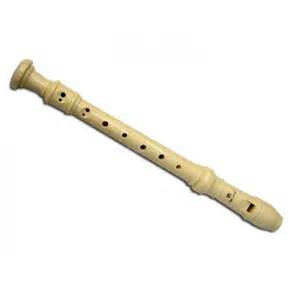
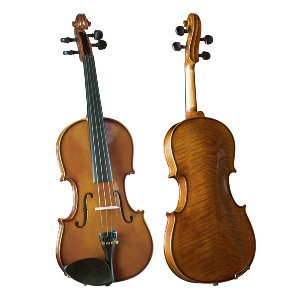
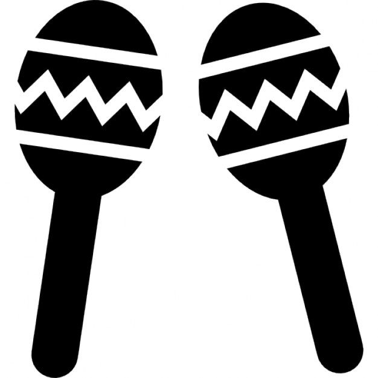

| Un instrumento musical es un objeto compuesto por la combinación de uno o más sistemas resonantes y los medios para su vibración, construido con el fin de reproducir sonido en uno o más tonos que puedan ser combinados por un intérprete para producir música. Al final, cualquier cosa que produzca sonido puede servir de instrumento musical | Instumentos musicales | El cuerpo humano, generando sonidos por medio de las vías aéreas superiores vocales y percusivos, fue, probablemente, el primer instrumento. Sachs y otros han especulado sobre la capacidad de Homo habilis de agregar sonidos de modo idiofónico a impulsos de expresión emocional motriz como la danza, empleando diversos medios como piedras, troncos huecos, brazaletes, conchas y dientes de animales. |  |
|  | Si bien por nuestra definición cualquier objeto es potencialmente un instrumento musical y como tal debería ser estudiado si, en determinadas circunstancias, es utilizado como instrumento musical en el contexto de una composición musical, vamos ahora a concentrarnos en el estudio de ciertos principios de funcionamiento acústico. |
Tipos de instrumentos musicales
|
|
|
Instrumentos de cuerda
|
 | UGB |